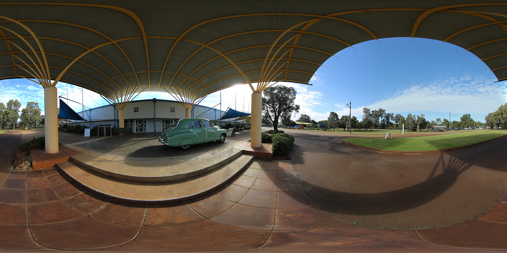
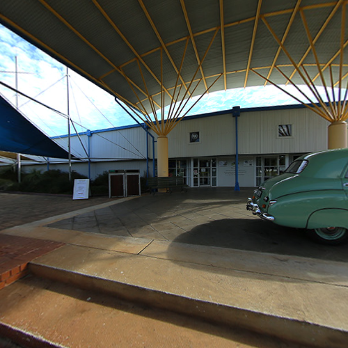
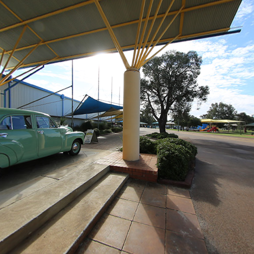
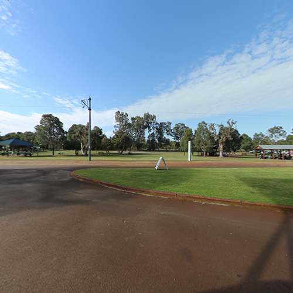
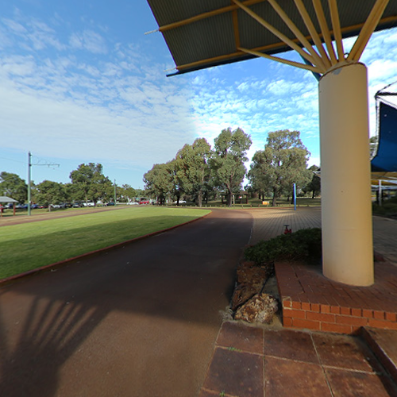
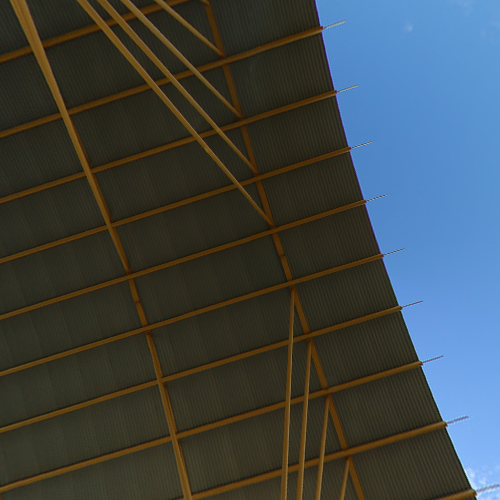
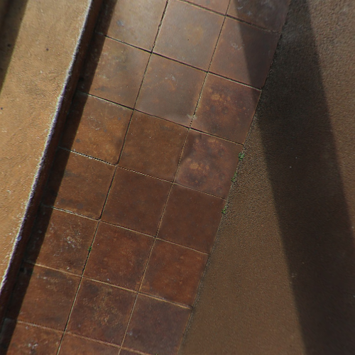
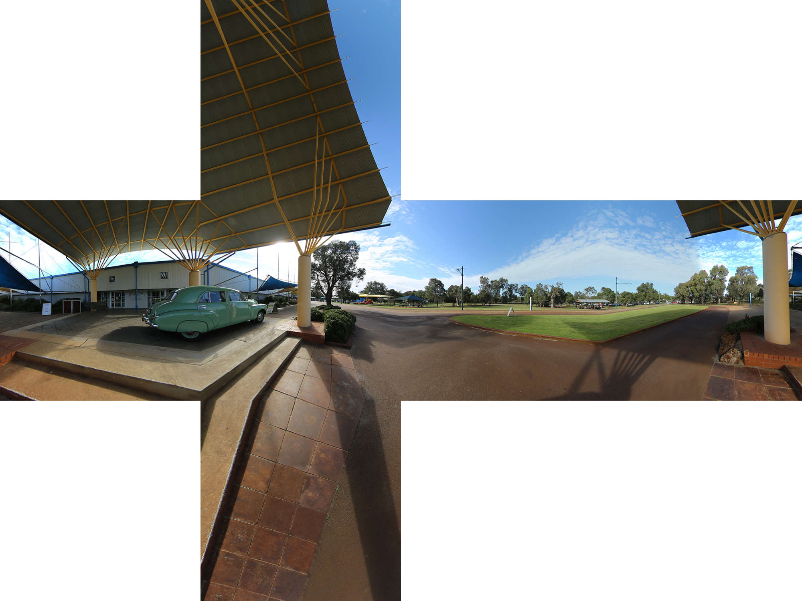

Copyright © Fred Weinhaus My scripts are available free of charge for non-commercial (non-profit) use, ONLY. For use of my scripts in commercial (for-profit) environments or non-free applications, please contact me (Fred Weinhaus) for licensing arrangements. My email address is fmw at alink dot net. If you: 1) redistribute, 2) incorporate any of these scripts into other free applications or 3) reprogram them in another scripting language, then you must contact me for permission, especially if the result might be used in a commercial or for-profit environment. Usage, whether stated or not in the script, is restricted to the above licensing arrangements. It is also subject, in a subordinate manner, to the ImageMagick license, which can be found at: http://www.imagemagick.org/script/license.php Please read the Pointers For Use on my home page to properly install and customize my scripts. |
|
Transforms a spherical panorama into a cubical representation. |
last modified: December 15, 2018
|
USAGE: sphericalpano2cube [-d dimension] [-b bgcolor ] [-i interpolation] [-m montage] infile outfile
-d ... dimension ....... square dimension of the output cube faces; integer>0; PURPOSE: To transform a spherical panorama into a cubical representation. DESCRIPTION: SPHERICALPANO2CUBE transforms a spherical panorama into a cubical representation with 6 face images: left, front, right, back, over, under. The 6 output images will be named from the outfile with these names appended. The over and under images will be as if facing forward and turning up and down, respectively. ARGUMENTS: -d dimension ... square DIMENSION of the output cube face images. Values are integers>0. The default=256. -b bcolor ... BGCOLOR is the background color for virtual pixels. Any valid IM color is allowed. The default=black. -i interpolation ... INTEPOLATION method. Any valid IM interpolation method is allowed. The default=bilinear. -m montage ... create a MONTAGE of the 6 cube face images. Choices are: yes or no. The default=no. The montage has a special arrangement. NOTE: This script will be slow due to the use of -fx. On my dual core INTEL Mac mini with 2.8 GHz processor and OSX Sierra, it takes 1 min 40 sec to create six 500x500 pixel face images and the montage from one 2000x1000 pixel spherical panorama. Time increase/decrease approximately by the square of the cube face dimensions. References: https://en.wikipedia.org/wiki/Cube_mapping http://paulbourke.net//miscellaneous/cubemaps/ https://stackoverflow.com/questions/29678510/convert-21-equirectangular-panorama-to-cube-map http://mathworld.wolfram.com/SphericalCoordinates.html CAVEAT: No guarantee that this script will work on all platforms, nor that trapping of inconsistent parameters is complete and foolproof. Use At Your Own Risk. |
|
Original Image |
|
(Click For Full Sized Image)
 |
|
Arguments: -d 500 -m yes |
|
Left  |
|
Front  |
|
Right  |
|
Back  |
|
Over  |
|
under  |
|
Montage (Click For Full Sized Image)  |
|
What the script does is as follows:
See the script for mathematical and code details. |